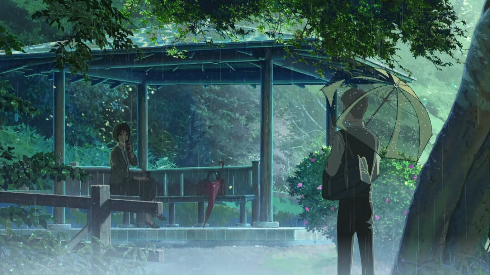
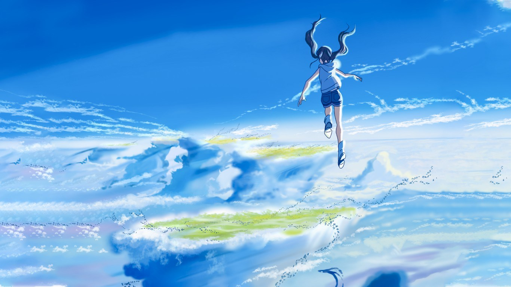

The Garden of Words (Japanese: 言の葉の庭, Hepburn: Kotonoha no Niwa) is a 2013 Japanese anime drama film written, directed and edited by Makoto Shinkai, animated by CoMix Wave Films and distributed by Toho. It stars Miyu Irino and Kana Hanazawa, and features music by Daisuke Kashiwa instead of Tenmon, who had composed the music for many of Shinkai's previous films. The theme song, "Rain", was originally written and performed by Senri Oe in 1988, but was remade for the film and was sung by Motohiro Hata. The film was made into a manga, with illustrations by Midori Motohashi, and later novelized by Shinkai, both in the same year as the film.
The film focuses on Takao Akizuki, an aspiring 15-year-old shoemaker, and Yukari Yukino, a mysterious 27-year-old woman he keeps meeting at Shinjuku Gyoen National Garden on rainy mornings. While Takao is skipping his morning class to design shoes, Yukari is avoiding work due to personal problems in her professional life. Yukari tells Takao nothing about herself, including her name, while Takao opens up to her, sharing his passion for shoes by offering to make a pair for her. When Takao learns Yukari's identity, emotions come to a head as both learn that they have been teaching each other "how to walk". Shinkai wrote the story as a tale of "lonely sadness", based on the meaning of the traditional Japanese word for "love", and uses shoes as a metaphor for life. The story's motifs include rain, Man'yōshū poetry, and the Japanese garden. The age difference between the two main characters and their character traits demonstrate how awkwardly and disjointedly people mature, where even adults sometimes feel no more mature than teenagers, according to Shinkai.
The Garden of Words premiered at the Gold Coast Film Festival in Australia on April 28, 2013 and had its general release on May 31, 2013 in Japan. For the Japanese premiere, the film was screened with an animated short called Dareka no Manazashi (だれかのまなざし, lit. Someone's Gaze), also directed by Shinkai. The Garden of Words had an unusual release schedule since it was released digitally on iTunes the same day as the Japanese theatrical premier, and its DVD and Blu-ray were released while the film was still in theaters, on June 21. The film has been licensed by Sentai Filmworks in North America, Anime Limited in the UK, and Madman Entertainment in Australia. The film performed well in theaters for an extended period of time and was hosted at many local and international film events. It ranked highly on iTunes Store during 2013 and was selected as the Year's Best Animation in iTunes' Best of 2013. It won the 2013 Kobe Theatrical Film Award and awards at the Fantasia International Film Festival and the Stuttgart Festival of Animated Film. Online reviews were generally favorable with universal praise of the art, though opinions were mixed regarding the story's length, plot and emotional climax.
Weathering with You (Japanese: 天気の子, Hepburn: Tenki no Ko, lit. "Child of Weather") is a 2019 Japanese animated romantic fantasy film produced by CoMix Wave Films and released by Toho. It depicts a high school boy who runs away from his rural home to Tokyo and befriends an orphan girl who has the ability to control the weather.
The film was commissioned in 2018, written and directed by Makoto Shinkai. It features the voices of Kotaro Daigo and Nana Mori, with animation direction by Atsushi Tamura, character design by Masayoshi Tanaka, and its orchestral score and soundtrack composed by Radwimps; the latter two previously collaborated with Shinkai on Your Name (2016). A light novel of the same name, also written by Shinkai, was published a day prior the film's premiere, while a manga adaptation was serialized in Afternoon on July 25, 2019.
Weathering with You was theatrically released in conventional, IMAX, and 4DX theaters in Japan on July 19, 2019, and was released in the United States on January 20, 2020. It received positive reviews, with praise for the animation, narrative, music, and emotional weight, although some reviewers were divided over perceived similarities to Your Name. The film grossed over ¥21.11 billion (US$193.65 million) worldwide, becoming the highest grossing Japanese film of 2019, and the sixth highest-grossing anime film of all time, unadjusted for inflation.
The film won a number of awards, including being selected as the Japanese entry for Best International Feature Film at the 92nd Academy Awards. It received four Annie Award nominations, including for Best Independent Animated Feature, tying Spirited Away and Millennium Actress (both 2001) for the most nominations for an anime film at the Annies, until 2021, when it was surpassed by Hosoda's Belle with five nominations.
